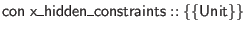
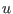
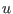

declarations may include constraints, via these grammar rules.
declarations may include constraints, via these grammar rules.
A signature item
is actually elaborated into two signature items:

and
. This is appropriate for common cases where client code doesn't care which keys a table has. It's also possible to include constraints after a
 signature item, with the same syntax as for
signature item, with the same syntax as for
 declarations. This may look like dependent typing, but it's just a convenience. The constraints are type-checked to determine a constructor 
to include in
, and then the expressions are thrown away. Nonetheless, it can be useful for documentation purposes to include table constraint details in signatures. Note that the automatic generation of
leads to a kind of free subtyping with respect to which constraints are defined.
declarations. This may look like dependent typing, but it's just a convenience. The constraints are type-checked to determine a constructor 
to include in
, and then the expressions are thrown away. Nonetheless, it can be useful for documentation purposes to include table constraint details in signatures. Note that the automatic generation of
leads to a kind of free subtyping with respect to which constraints are defined.